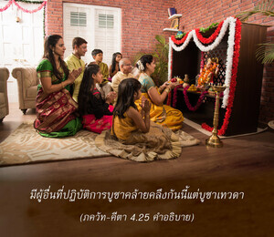
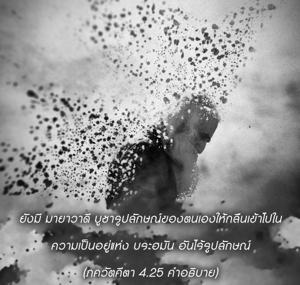

โยคีบางท่านบูชาเทวดาอย่างสมบูรณ์ด้วยการถวายเครื่องบูชาต่างๆให้เทวดา และโยคีบางท่านถวายการบูชาในไฟแห่ง พฺรหฺมนฺ สูงสุด


ดังที่ได้อธิบายไว้ข้างต้น บุคคลผู้ปฏิบัติหน้าที่ในกฺฤษฺณจิตสำนึกเรียกว่าโยคี ผู้สมบูรณ์ หรือนักทิพย์นิยมชั้นหนึ่ง มีผู้อื่นที่ปฏิบัติการบูชาคล้ายคลึงกันนี้แต่บูชาเทพ และยังมีผู้อื่นอีกที่บูชา พฺรหฺมนฺ สูงสุด หรือลักษณะที่ไร้รูปลักษณ์ขององค์ภควานฺ ดังนั้น จึงมีการบูชาประเภทต่างๆ กัน ประเภทของการบูชาที่ต่างกันโดยผู้ปฏิบัติที่ต่างกัน แสดงให้เห็นว่าการบูชาที่หลากหลายแตกต่างกันโดยผิวเผินเท่านั้น อันที่จริงการบูชาหมายถึงการทำให้องค์ภควานฺ พระวิษฺณุ ผู้ทรงมีอีกพระนามหนึ่งว่า ยชฺญ ทรงพอพระทัย การบูชาที่หลากหลายทั้งหมดนี้จัดเข้าอยู่ในสองประเภทหลัก คือ การบูชาด้วยสิ่งของวัตถุทางโลก และการบูชาเพื่อผลแห่งความรู้ทิพย์ ผู้ที่อยู่ในกฺฤษฺณจิตสำนึกสละความเป็นเจ้าของวัตถุทั้งหลาย เป็นการบูชาเพื่อให้องค์ภควานฺทรงพอพระทัย ในขณะที่ผู้อื่นต้องการความสุขชั่วคราวทางวัตถุ บูชาสิ่งของวัตถุเพื่อให้เหล่าเทพ เช่น พระอินทร์ พระอาทิตย์ ฯลฯ ทรงพอพระทัย และยังมี มายาวาที บูชารูปลักษณ์ของตนเองให้กลืนเข้าไปในความเป็นอยู่แห่ง พฺรหฺมนฺ อันไร้รูปลักษณ์ เหล่าเทพ คือ สิ่งมีชีวิตผู้มีพลังอำนาจ ที่องค์ภควานฺทรงแต่งตั้งให้ดำรงรักษา และบริหารหน้าที่ทั้งหลายในโลกวัตถุ เช่น ความร้อน น้ำ และแสงของจักรวาล ผู้ที่สนใจในผลประโยชน์ทางวัตถุจะบูชาเทพด้วยพิธีบูชาต่างๆ ตามพิธีกรรมพระเวทพวกนี้เรียกว่า พหฺวฺ-อีศฺวร-วาที หรือผู้เชื่อในเทพหลายองค์ แต่พวกที่บูชาสัจธรรมสูงสุดที่ไร้รูปลักษณ์ และคิดว่ารูปลักษณ์ของเหล่าเทพไม่ถาวร จะบูชาปัจเจกชีวิตของตนเองไปในไฟสูงสุด ดังนั้น จึงจบปัจเจกชีวิตของตนด้วยการกลืนหายเข้าไปในความเป็นอยู่ขององค์ภควานฺ มายาวาที พวกนี้บูชาเวลาของพวกตนไปกับการคาดคะเนทางปรัชญา เพื่อที่จะเข้าใจธรรมชาติทิพย์ของพระองค์ หรืออีกนัยหนึ่ง ผู้ทำงานเพื่อหวังผลบูชาวัตถุสิ่งของของตนเพื่อความสุขทางวัตถุ ขณะที่ มายาวาที ถวายการบูชาชื่อระบุต่างๆ ทางวัตถุ ด้วยแนวคิดที่จะกลืนเข้าไปในความเป็นอยู่ขององค์ภควานฺ สำหรับ มายาวาที แท่นบูชาแห่งการบูชาไฟ คือ พฺรหฺมนฺ สูงสุด และสิ่งของบูชา คือ ชีวิตของตนเอง ที่ถูกเผาผลาญไปในไฟแห่ง พฺรหฺมนฺ อย่างไรก็ดี บุคคลในกฺฤษฺณจิตสำนึก เช่น อรฺชุน ทรงบูชาทุกสิ่งทุกอย่างเพื่อให้องค์กฺฤษฺณทรงพอพระทัย ดังนั้น ความเป็นเจ้าของวัตถุทั้งหลายรวมทั้งชีวิตของตนเอง ทุกสิ่งทุกอย่างเป็นเครื่องบูชาสำหรับองค์กฺฤษฺณ ดังนั้น จึงเป็นโยคีชั้นหนึ่ง แต่ท่านไม่ได้สูญเสียความเป็นปัจเจกบุคคล